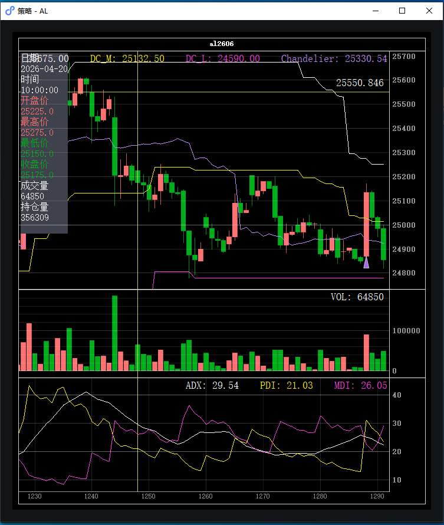
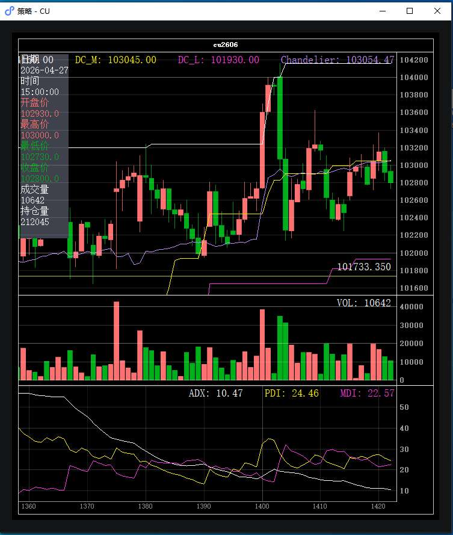
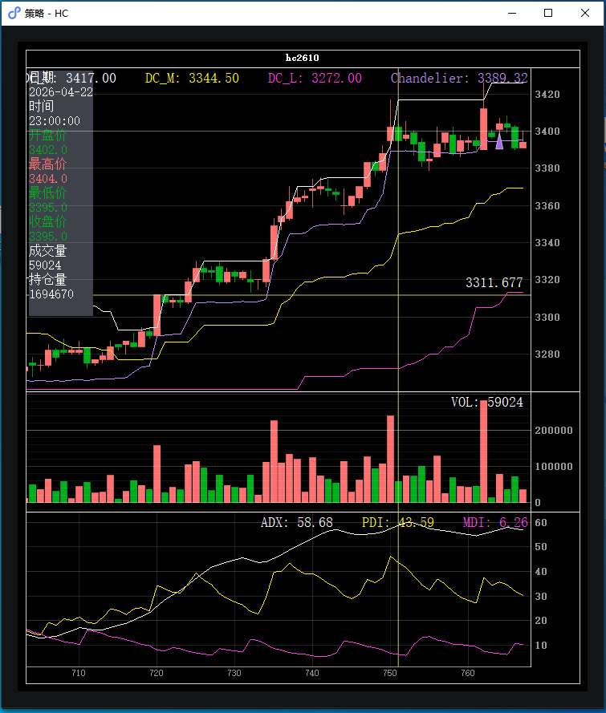
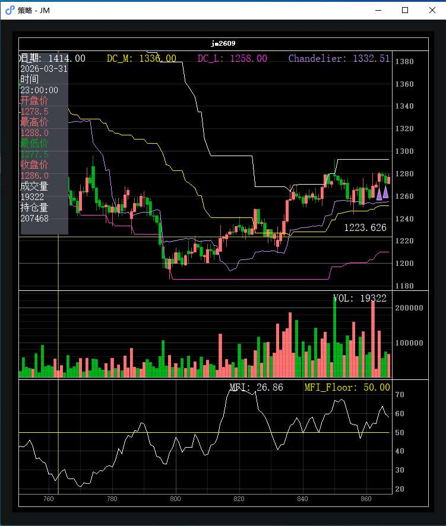
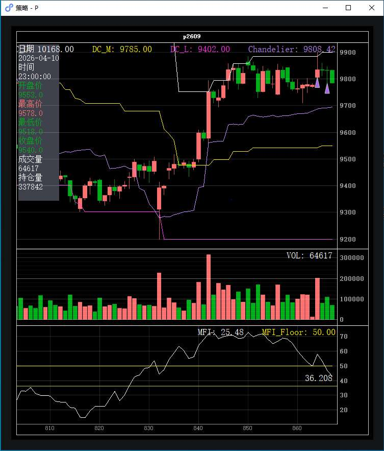
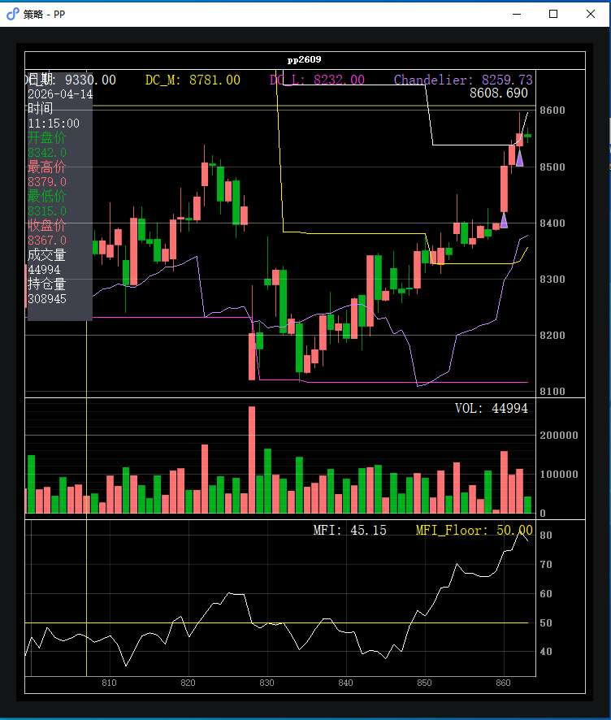

| 开仓时间 | 品种 | 方向 | 手数 | 入场价 | 出场价 | 毛盈亏 | 滑点损益 | 净盈亏 | 状态 |
|---|---|---|---|---|---|---|---|---|---|
| 04-27 10:00:02 | PP | 多 | 4 | 8,500.0 | 8,493.0 | −¥140.00 | ¥20.00 (合+1.0跳·均+0.5跳) | −¥120.00 | 已平仓 |
| 04-27 10:00:03 | AL | 多 | 3 | 25,130.0 | 25,060.0 | −¥1,050.00 | ¥75.00 (合+1.0跳·均+0.5跳) | −¥975.00 | 已平仓 |
| 04-27 10:00:03 | P | 多 | 1 | 9,833.0 | 9,819.0 | −¥140.00 | −¥10.00 (合-0.5跳·均-0.2跳) | −¥150.00 | 已平仓 |
| 04-27 10:00:03 | P | 多 | 1 | 9,833.0 | 9,819.0 | −¥140.00 | −¥10.00 (合-0.5跳·均-0.2跳) | −¥150.00 | 已平仓 |
| 04-27 10:00:03 | P | 多 | 1 | 9,833.0 | 9,819.0 | −¥140.00 | −¥10.00 (合-0.5跳·均-0.2跳) | −¥150.00 | 已平仓 |
| 04-27 10:00:06 | JM | 多 | 1 | 1,280.5 | 1,277.0 | −¥210.00 | −¥30.00 (合-1.0跳·均-0.5跳) | −¥240.00 | 已平仓 |
| 04-27 10:00:06 | JM | 多 | 2 | 1,280.5 | 1,277.0 | −¥420.00 | −¥60.00 (合-1.0跳·均-0.5跳) | −¥480.00 | 已平仓 |
| 04-27 10:00:06 | HC | 多 | 1 | 3,405.0 | 3,396.0 | −¥90.00 | −¥20.00 (合-2.0跳·均-1.0跳) | −¥110.00 | 已平仓 |
| 04-27 10:00:06 | HC | 多 | 2 | 3,405.0 | 3,396.0 | −¥180.00 | −¥40.00 (合-2.0跳·均-1.0跳) | −¥220.00 | 已平仓 |
| 04-27 10:00:06 | HC | 多 | 1 | 3,405.0 | 3,396.0 | −¥90.00 | −¥20.00 (合-2.0跳·均-1.0跳) | −¥110.00 | 已平仓 |
| 04-27 14:15:02 | PP | 多 | 4 | 8,557.0 | — | — | ¥20.00 (+1.0跳) | ¥20.00 | 持有中 |
| 04-27 14:15:03 | P | 多 | 2 | 9,832.0 | 9,801.0 | −¥620.00 | −¥20.00 (合-0.5跳·均-0.2跳) | −¥640.00 | 已平仓 |
| 04-27 14:15:06 | JM | 多 | 2 | 1,271.5 | — | — | ¥0.00 (0跳) | ¥0.00 | 持有中 |

| 开仓时间 | 手数 | 成交价 | 送单价 | 原始信号 raw | 理论手数 | 目标手数 | ATR | 当时指标值 | EXECUTE 原因 |
|---|---|---|---|---|---|---|---|---|---|
| 10:00:03 | 3 | 25,130.0 | 25,130.0 | 4.34 | 4 | 3 | 100.26 | DC_U=25275.0 DC_M=25027.5 close=25135.0 ADX=25.1 PDI=31.2 MDI=22.5 | signal=0.65 forecast=6.5 optimal=4 target=3 |
| 平仓时间 | 手数 | 成交价 | 送单价 | 触发条件 | 详情 |
|---|---|---|---|---|---|
| 10:13:00 | 3 | 25,060.0 | 25,035.0 | 移动止损 | 当前价 25060.0 ≤ 移损线 25064.6 |
| 开仓时间 | 方向 | 手数 | 入场成本 | 出场成本 | 毛盈亏 | 滑点损益 | 净盈亏 |
|---|---|---|---|---|---|---|---|
| 10:00:03 | 多 | 3 | 25,130.0 | 25,060.0 | −¥1,050.00 | ¥75.00 (合+1.0跳·均+0.5跳) | −¥975.00 |

本日窗口内无开仓/平仓事件。

| 开仓时间 | 手数 | 成交价 | 送单价 | 原始信号 raw | 理论手数 | 目标手数 | ATR | 当时指标值 | EXECUTE 原因 |
|---|---|---|---|---|---|---|---|---|---|
| 10:00:06 | 1 | 3,405.0 | 3,403.0 | 5.00 | 5 | 4 | 13.05 | DC_U=3426.0 DC_M=3366.5 close=3404.0 ADX=57.1 PDI=35.7 MDI=6.5 | signal=0.95 forecast=9.5 optimal=5 target=4 |
| 10:00:06 | 2 | 3,405.0 | 3,403.0 | 5.00 | 5 | 4 | 13.05 | DC_U=3426.0 DC_M=3366.5 close=3404.0 ADX=57.1 PDI=35.7 MDI=6.5 | signal=0.95 forecast=9.5 optimal=5 target=4 |
| 10:00:06 | 1 | 3,405.0 | 3,403.0 | 5.00 | 5 | 4 | 13.05 | DC_U=3426.0 DC_M=3366.5 close=3404.0 ADX=57.1 PDI=35.7 MDI=6.5 | signal=0.95 forecast=9.5 optimal=5 target=4 |
| 平仓时间 | 手数 | 成交价 | 送单价 | 触发条件 | 详情 |
|---|---|---|---|---|---|
| 13:39:00 | 1 | 3,396.0 | 3,391.0 | 移动止损 | 当前价 3397.0 ≤ 移损线 3397.8 |
| 13:39:00 | 2 | 3,396.0 | 3,391.0 | 移动止损 | 当前价 3397.0 ≤ 移损线 3397.8 |
| 13:39:00 | 1 | 3,396.0 | 3,391.0 | 移动止损 | 当前价 3397.0 ≤ 移损线 3397.8 |
| 开仓时间 | 方向 | 手数 | 入场成本 | 出场成本 | 毛盈亏 | 滑点损益 | 净盈亏 |
|---|---|---|---|---|---|---|---|
| 10:00:06 | 多 | 1 | 3,405.0 | 3,396.0 | −¥90.00 | −¥20.00 (合-2.0跳·均-1.0跳) | −¥110.00 |
| 10:00:06 | 多 | 2 | 3,405.0 | 3,396.0 | −¥180.00 | −¥40.00 (合-2.0跳·均-1.0跳) | −¥220.00 |
| 10:00:06 | 多 | 1 | 3,405.0 | 3,396.0 | −¥90.00 | −¥20.00 (合-2.0跳·均-1.0跳) | −¥110.00 |

| 开仓时间 | 手数 | 成交价 | 送单价 | 原始信号 raw | 理论手数 | 目标手数 | ATR | 当时指标值 | EXECUTE 原因 |
|---|---|---|---|---|---|---|---|---|---|
| 10:00:06 | 1 | 1,280.5 | 1,279.5 | 3.71 | 4 | 3 | 12.97 | DC_U=1292.5 DC_M=1251.2 DC_L=1210.0 close=1280.0 MFI=61.1 | signal=0.75 forecast=7.5 optimal=4 target=3 |
| 10:00:06 | 2 | 1,280.5 | 1,279.5 | 3.71 | 4 | 3 | 12.97 | DC_U=1292.5 DC_M=1251.2 DC_L=1210.0 close=1280.0 MFI=61.1 | signal=0.75 forecast=7.5 optimal=4 target=3 |
| 14:15:06 | 2 | 1,271.5 | 1,271.0 | 2.91 | 3 | 2 | 12.57 | DC_U=1292.5 DC_M=1251.2 DC_L=1210.0 close=1271.5 MFI=59.5 | signal=0.57 forecast=5.7 optimal=3 target=2 |
| 平仓时间 | 手数 | 成交价 | 送单价 | 触发条件 | 详情 |
|---|---|---|---|---|---|
| 10:30:30 | 1 | 1,277.0 | 1,274.5 | 移动止损 | 当前价 1277.0 ≤ 移损线 1277.2 |
| 10:30:30 | 2 | 1,277.0 | 1,274.5 | 移动止损 | 当前价 1277.0 ≤ 移损线 1277.2 |
| 开仓时间 | 方向 | 手数 | 入场成本 | 出场成本 | 毛盈亏 | 滑点损益 | 净盈亏 |
|---|---|---|---|---|---|---|---|
| 10:00:06 | 多 | 1 | 1,280.5 | 1,277.0 | −¥210.00 | −¥30.00 (合-1.0跳·均-0.5跳) | −¥240.00 |
| 10:00:06 | 多 | 2 | 1,280.5 | 1,277.0 | −¥420.00 | −¥60.00 (合-1.0跳·均-0.5跳) | −¥480.00 |
| 14:15:06 | 多 | 2 | 1,271.5 | 持有中 | — | ¥0.00 (0跳) | ¥0.00 |

| 开仓时间 | 手数 | 成交价 | 送单价 | 原始信号 raw | 理论手数 | 目标手数 | ATR | 当时指标值 | EXECUTE 原因 |
|---|---|---|---|---|---|---|---|---|---|
| 10:00:03 | 1 | 9,833.0 | 9,833.0 | 3.92 | 4 | 3 | 69.38 | DC_U=9885.0 DC_M=9542.5 DC_L=9200.0 close=9834.0 MFI=57.9 | signal=0.71 forecast=7.1 optimal=4 target=3 |
| 10:00:03 | 1 | 9,833.0 | 9,833.0 | 3.92 | 4 | 3 | 69.38 | DC_U=9885.0 DC_M=9542.5 DC_L=9200.0 close=9834.0 MFI=57.9 | signal=0.71 forecast=7.1 optimal=4 target=3 |
| 10:00:03 | 1 | 9,833.0 | 9,833.0 | 3.92 | 4 | 3 | 69.38 | DC_U=9885.0 DC_M=9542.5 DC_L=9200.0 close=9834.0 MFI=57.9 | signal=0.71 forecast=7.1 optimal=4 target=3 |
| 14:15:03 | 2 | 9,832.0 | 9,832.0 | 3.44 | 3 | 2 | 67.37 | DC_U=9900.0 DC_M=9550.0 DC_L=9200.0 close=9832.0 MFI=46.9 | signal=0.60 forecast=6.0 optimal=3 target=2 |
| 平仓时间 | 手数 | 成交价 | 送单价 | 触发条件 | 详情 |
|---|---|---|---|---|---|
| 10:32:00 | 1 | 9,819.0 | 9,809.0 | 移动止损 | 当前价 9821.0 ≤ 移损线 9829.4 |
| 10:32:00 | 1 | 9,819.0 | 9,809.0 | 移动止损 | 当前价 9821.0 ≤ 移损线 9829.4 |
| 10:32:00 | 1 | 9,819.0 | 9,809.0 | 移动止损 | 当前价 9821.0 ≤ 移损线 9829.4 |
| 14:27:00 | 2 | 9,801.0 | 9,791.0 | 移动止损 | 当前价 9802.0 ≤ 移损线 9802.5 |
| 开仓时间 | 方向 | 手数 | 入场成本 | 出场成本 | 毛盈亏 | 滑点损益 | 净盈亏 |
|---|---|---|---|---|---|---|---|
| 10:00:03 | 多 | 1 | 9,833.0 | 9,819.0 | −¥140.00 | −¥10.00 (合-0.5跳·均-0.2跳) | −¥150.00 |
| 10:00:03 | 多 | 1 | 9,833.0 | 9,819.0 | −¥140.00 | −¥10.00 (合-0.5跳·均-0.2跳) | −¥150.00 |
| 10:00:03 | 多 | 1 | 9,833.0 | 9,819.0 | −¥140.00 | −¥10.00 (合-0.5跳·均-0.2跳) | −¥150.00 |
| 14:15:03 | 多 | 2 | 9,832.0 | 9,801.0 | −¥620.00 | −¥20.00 (合-0.5跳·均-0.2跳) | −¥640.00 |

| 开仓时间 | 手数 | 成交价 | 送单价 | 原始信号 raw | 理论手数 | 目标手数 | ATR | 当时指标值 | EXECUTE 原因 |
|---|---|---|---|---|---|---|---|---|---|
| 10:00:02 | 4 | 8,500.0 | 8,500.0 | 5.00 | 5 | 4 | 69.12 | DC_U=8538.0 DC_M=8327.0 DC_L=8116.0 close=8501.0 MFI=74.5 | signal=0.93 forecast=9.3 optimal=5 target=4 |
| 14:15:02 | 4 | 8,557.0 | 8,557.0 | 5.00 | 5 | 4 | 68.30 | DC_U=8547.0 DC_M=8331.5 DC_L=8116.0 close=8558.0 MFI=81.7 | signal=1.00 forecast=10.0 optimal=5 target=4 |
| 平仓时间 | 手数 | 成交价 | 送单价 | 触发条件 | 详情 |
|---|---|---|---|---|---|
| 10:30:30 | 4 | 8,493.0 | 8,487.0 | 移动止损 | 当前价 8493.0 ≤ 移损线 8498.4 |
| 开仓时间 | 方向 | 手数 | 入场成本 | 出场成本 | 毛盈亏 | 滑点损益 | 净盈亏 |
|---|---|---|---|---|---|---|---|
| 10:00:02 | 多 | 4 | 8,500.0 | 8,493.0 | −¥140.00 | ¥20.00 (合+1.0跳·均+0.5跳) | −¥120.00 |
| 14:15:02 | 多 | 4 | 8,557.0 | 持有中 | — | ¥20.00 (+1.0跳) | ¥20.00 |